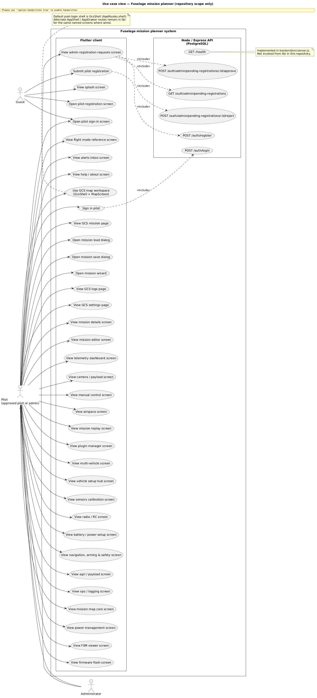
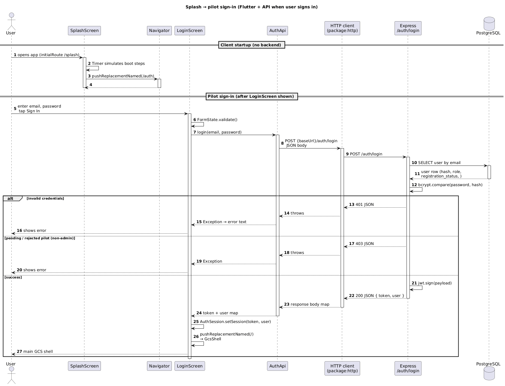
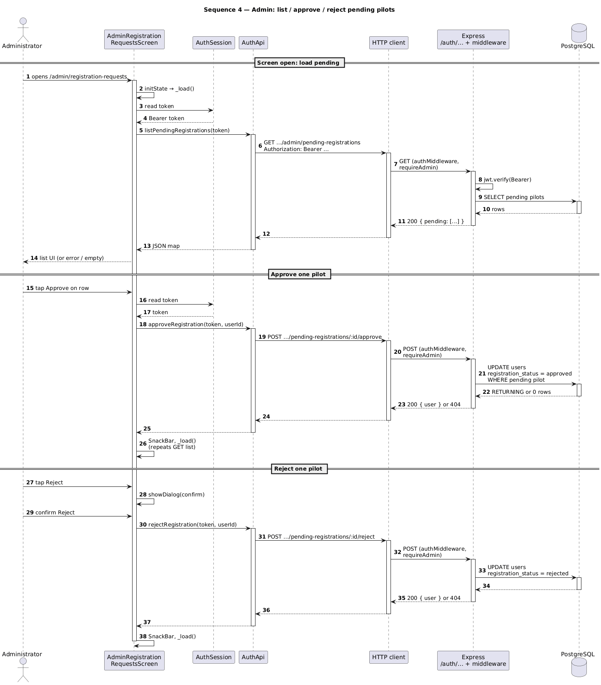

These images are the authoritative UML exports you placed under docs/arch/. They are embedded below at print resolution.



The following diagrams summarize structure found in lib/, backend/src/, and backend/sql/. They complement the sequence diagrams in §1.
Enumerates behaviors implemented in the Flutter router, GCS shell, dialogs, and Express auth/health API. Admin denotes users with role == admin in JWT payload. Alternate AppShell / drawer routes reuse many of the same named screens but are not the default post-login path (MissionPlannerApp uses GcsShell after sign-in).
| ID | Use case | Primary actor(s) | Stimulus / route / API |
|---|---|---|---|
| UC-001 | View splash screen | Guest | `/splash` → SplashScreen |
| UC-002 | Open pilot sign-in screen | Guest | `/auth` after splash; LoginScreen |
| UC-003 | Open pilot registration screen | Guest | LoginScreen → `/register` |
| UC-004 | Submit pilot registration | Guest | RegisterScreen → POST `/auth/register` |
| UC-005 | Sign in pilot | Guest → Pilot | LoginScreen → POST `/auth/login` → AuthSession → `/` |
| UC-006 | Use GCS map workspace | Pilot, Admin | GcsShell + MapScreen (map section) |
| UC-007 | View GCS mission page | Pilot, Admin | GcsShell mission section → MissionPage |
| UC-008 | Open mission load dialog | Pilot, Admin | MissionPage → showLoadMissionDialog |
| UC-009 | Open mission save dialog | Pilot, Admin | MissionPage → showSaveMissionDialog |
| UC-010 | Open mission wizard | Pilot, Admin | `/mission-wizard` (e.g. New mission, map FAB) |
| UC-011 | View GCS logs page | Pilot, Admin | GcsShell logs → LogsPage |
| UC-012 | View GCS settings page | Pilot, Admin | GcsShell settings → SettingsPage |
| UC-013 | Open tools sheet (secondary routes) | Pilot, Admin | GcsShell tools modal → pushNamed routes below |
| UC-014 | View admin registration requests | Admin | `/admin/registration-requests` (+ pending API) |
| UC-015 | View mission details | Pilot, Admin | `/mission-details` |
| UC-016 | View mission editor | Pilot, Admin | `/mission-editor` |
| UC-017 | View telemetry dashboard | Pilot, Admin | `/telemetry` |
| UC-018 | View camera / payload | Pilot, Admin | `/camera-payload` |
| UC-019 | View manual control | Pilot, Admin | `/manual-control` |
| UC-020 | View airspace | Pilot, Admin | `/airspace` |
| UC-021 | View mission replay | Pilot, Admin | `/replay` |
| UC-022 | View plugin manager | Pilot, Admin | `/plugins` |
| UC-023 | View multi-vehicle | Pilot, Admin | `/vehicles` |
| UC-024 | View vehicle setup hub | Pilot, Admin | `/vehicle-setup` |
| UC-025 | View sensors calibration | Pilot, Admin | `/vehicle-setup-sensors` |
| UC-026 | View radio / RC setup | Pilot, Admin | `/vehicle-setup-radio` |
| UC-027 | View battery / power setup | Pilot, Admin | `/vehicle-setup-battery` |
| UC-028 | View navigation, arming & safety | Pilot, Admin | `/vehicle-setup-nav-safety` |
| UC-029 | View agri / payload setup | Pilot, Admin | `/vehicle-setup-agri` |
| UC-030 | View ops / logging setup | Pilot, Admin | `/vehicle-setup-ops` |
| UC-031 | View mission map core (setup) | Pilot, Admin | `/vehicle-setup-mission` |
| UC-032 | View power management | Pilot, Admin | `/power` |
| UC-033 | View FSM viewer | Pilot, Admin | `/fsm-viewer` |
| UC-034 | View firmware flash | Pilot, Admin | `/firmware-flash` |
| UC-035 | View flight mode reference | Pilot, Admin | `/flight-mode-reference` |
| UC-036 | View alerts inbox | Pilot, Admin | `/alerts-inbox` |
| UC-037 | View help / about | Pilot, Admin | `/help-about` |
| UC-038 | Resolve unknown route | Pilot, Admin | Unregistered name → `_UnknownRouteScreen` |
| UC-039 | List pending registrations (API) | Admin | GET `/auth/admin/pending-registrations` |
| UC-040 | Approve pilot (API) | Admin | POST `…/pending-registrations/:id/approve` |
| UC-041 | Reject pilot (API) | Admin | POST `…/pending-registrations/:id/reject` |
| UC-042 | Check API and database health | System operator | GET `/health` (not called from `lib/`) |
missions exists (see init.sql / migrate.js); no mission CRUD REST routes are implemented in this repository.